30. Encolher de ombros com barra
Barbell Shrug · Barra


Barbell Shrug · Barra
Barbell Shrug Behind The Back · Barra
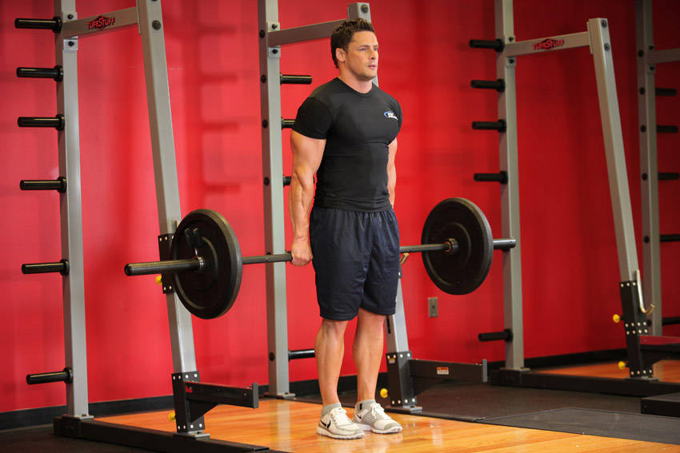
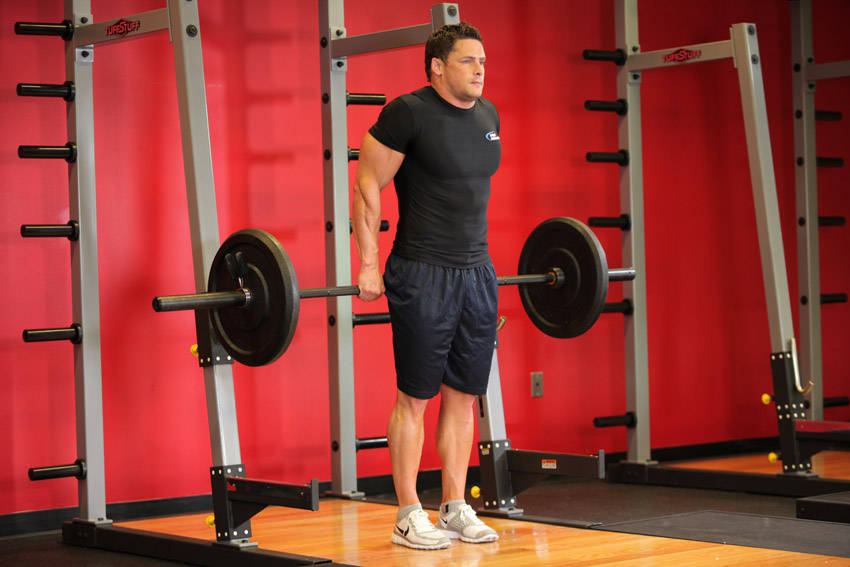
Cable Shrugs · Cabo
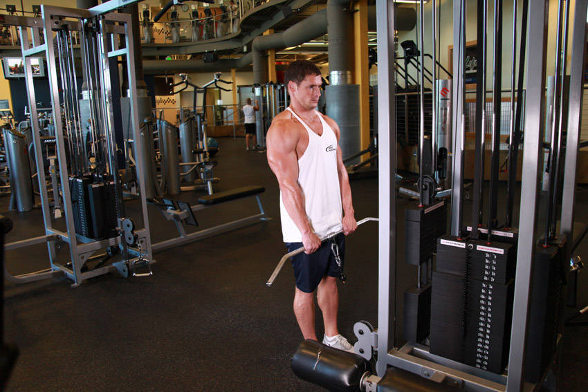
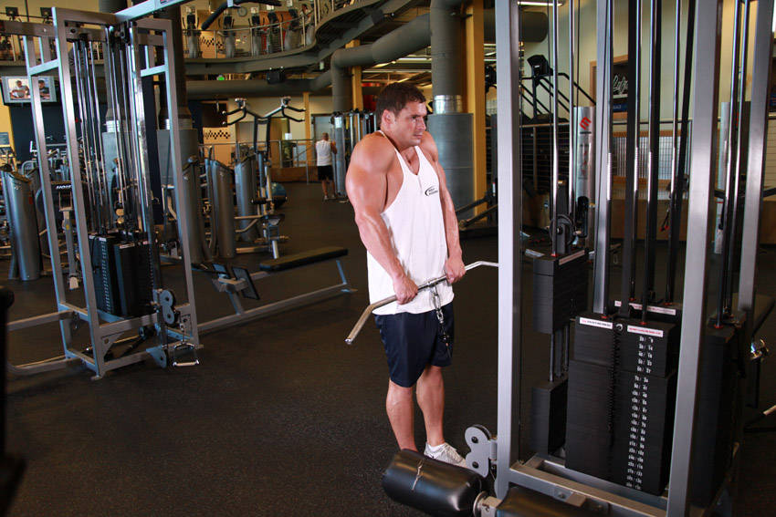
Calf-Machine Shoulder Shrug · Máquina
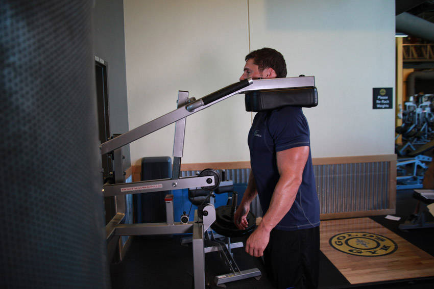
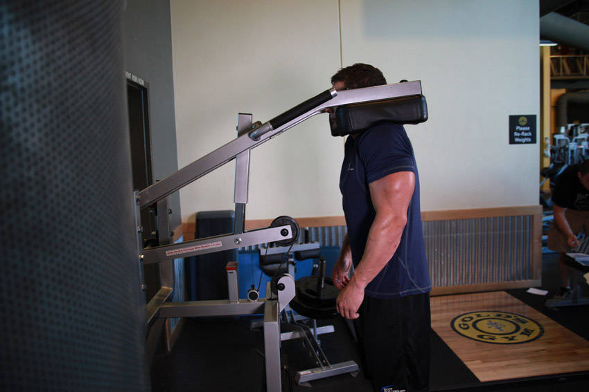
Dumbbell Shrug · Halteres
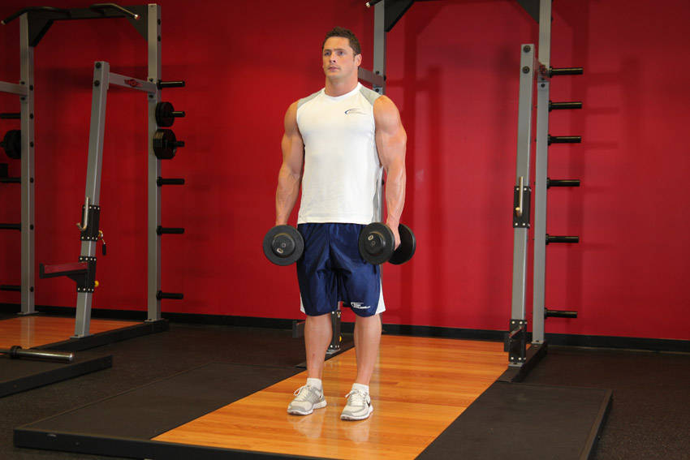
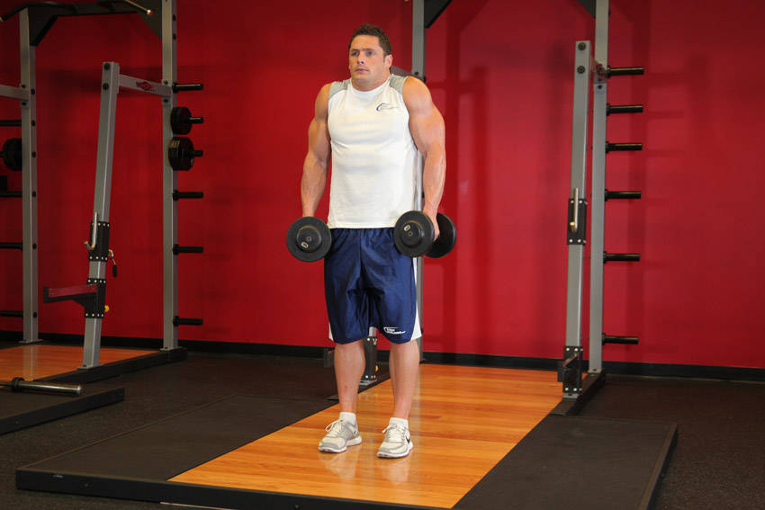
Leverage Shrug · Máquina
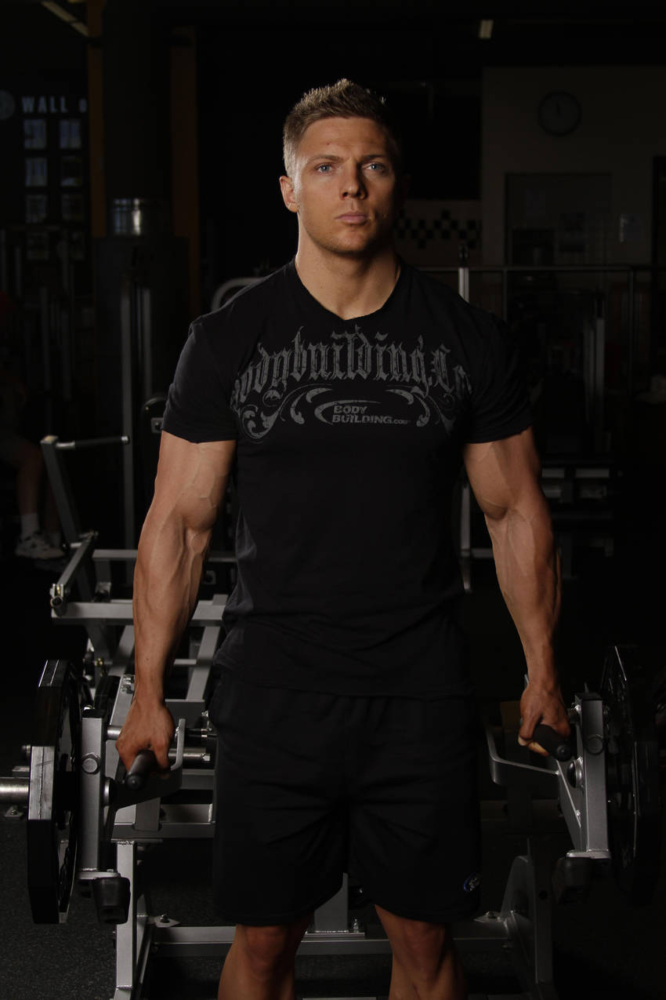
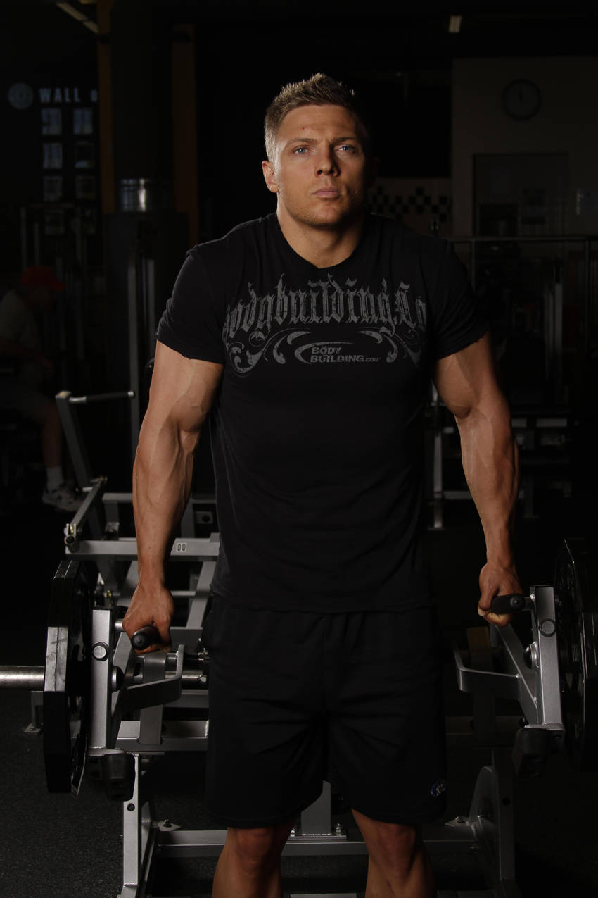
Smith Machine Behind the Back Shrug · Máquina
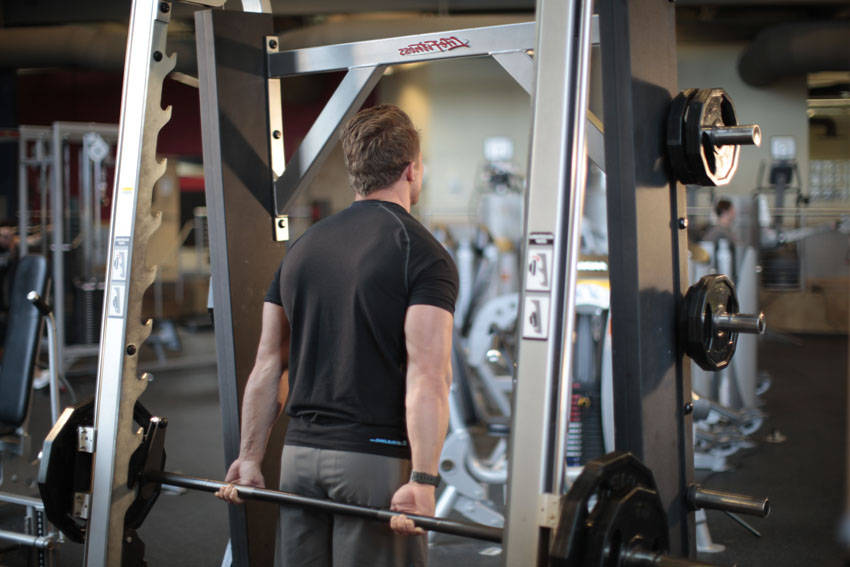
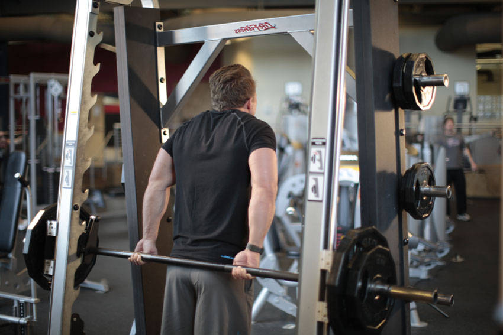
Smith Machine Upright Row · Máquina
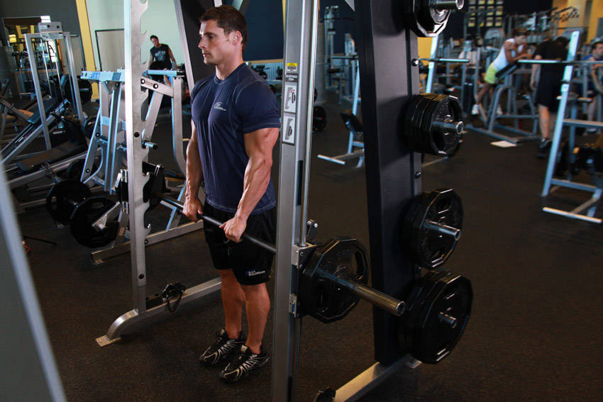
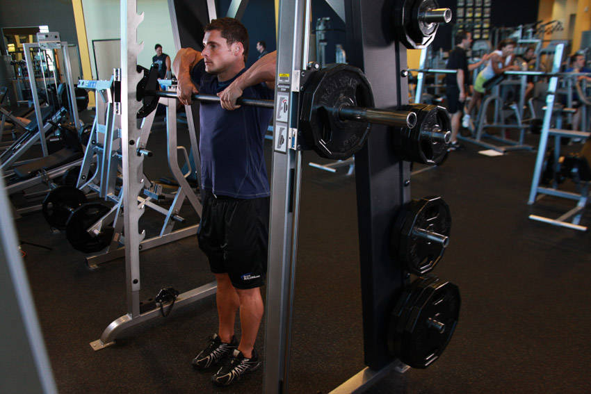
Standing Dumbbell Upright Row · Halteres
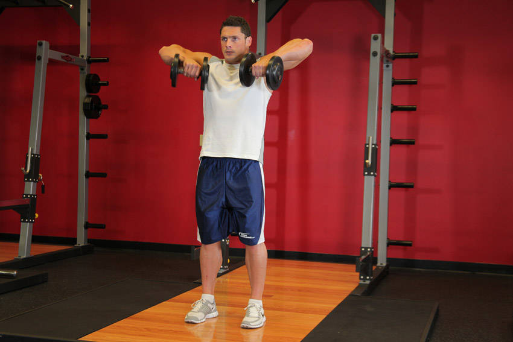
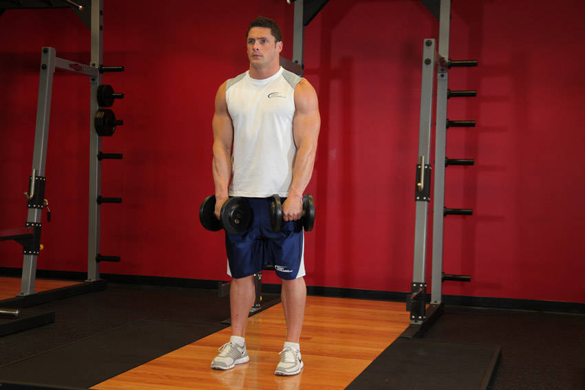
Upright Row - With Bands · Faixas elásticas
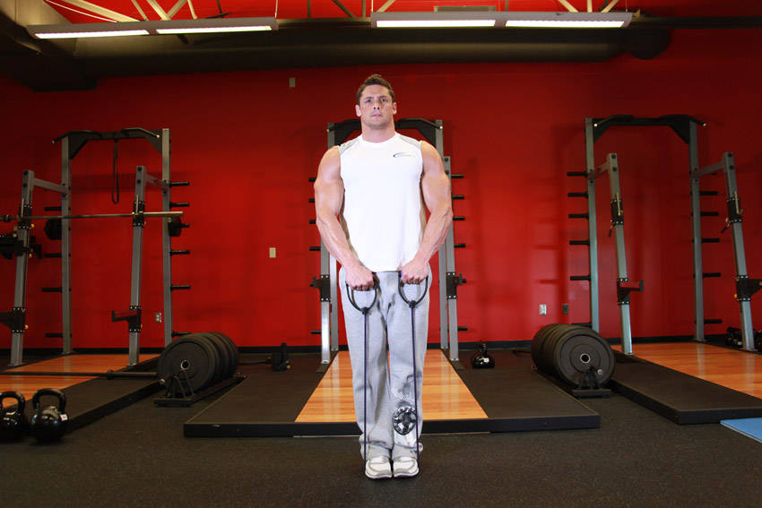
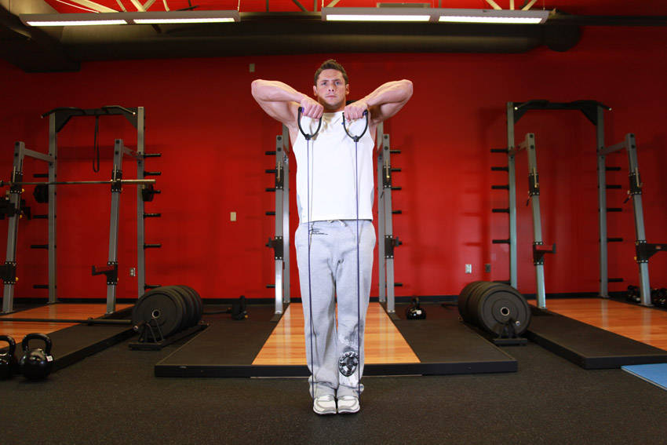
Upright Cable Row · Cabo

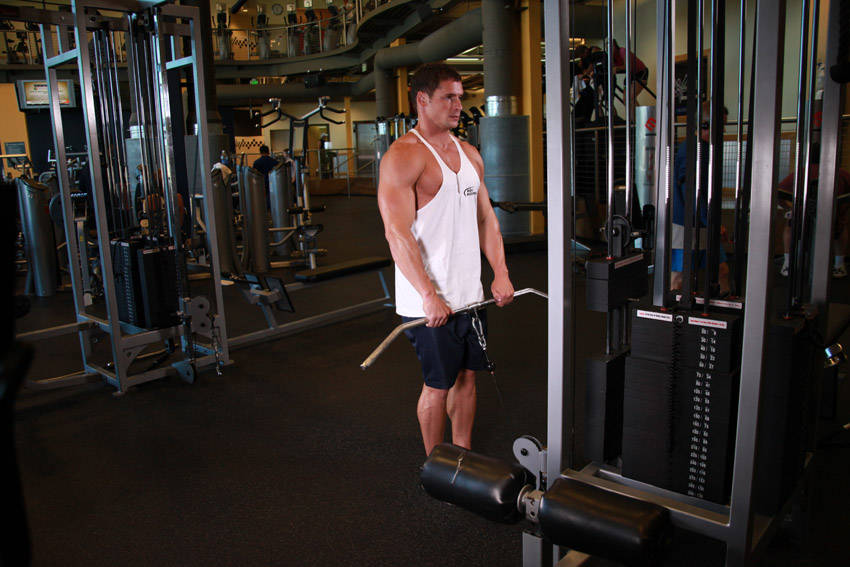